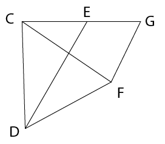
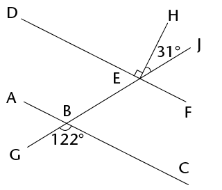

Term revision and assessment
- Triangle FGH where GH = 6,2 cm; \(\hat{G}\) = 36\(^\circ\) and \(\hat{H}\) = 63\(^\circ\)
- Parallelogram PQRS where PQ = 5,7 cm, PS = 7,8 cm and \(\hat{R}\) = 112\(^\circ\)
- Construct \(\triangle\)KLM where KL = 9,4 cm; LM = 7 cm and MK = 7,8 cm.
- Construct the perpendicular bisectors of all three sides of the triangle drawn in part (a). You should find that they all go through the same point.
- Use the point of intersection as the midpoint of a circle that passes through all three vertices of the triangle. Use your compass to draw this circle.
- 45\(^\circ\)
- 210\(^\circ\)
- Construct a horizontal line, AB, which is 2 cm long.
- Set your compass to 2 cm, and from each of A and B, draw an arc above line AB. Call the point that the arcs intersect O.
- Draw a circle of radius 2 cm, centred on O. It should go through A and B.
- Place the compass on point B, and draw an arc crossing the circle on the side opposite to A. Call this point C.
- Repeat the above step to create points D to F.
- Join B to C with a straight line. Repeat with C to D, and so on, until you get back to point A. You have now constructed a regular hexagon!
|
Parallelogram |
Rectangle |
Square |
Rhombus |
Trapezium |
Kite |
|
|
Diagonals bisect each other |
||||||
|
Diagonals cut at right angles |
Study the following figure. Note that \(d\), \(e\) and \(f\) are the exterior angles of the triangle.

- Write down an equation that shows the
relationship between angle d and the sum of two other
angles in the image.
- Determine the size of d + e + f. Give reasons for your
answer.


Note: the triangles are not drawn to scale.


Prove that \(\triangle\)SRP \(|||\) \(\triangle\)SQT.

-

- Given: EH = EJ

-
\(A\hat{B}G = x\); \(B\hat{C}D = 130^\circ\) and \(C\hat{D}J = 72^\circ\)

-


- BF = 8 cm; BC = 10 cm; FD = 6 cm

- GI = 12 cm; JK = 6 cm and JK : KH = 1 :
2

- The shape alongside is that of a
window, consisting of a rectangular section HJKL, and a
semi-circular top section. HJ = 0,5 m and JK = 0,2 m.


- Area of the rectangle
- Perimeter of the rectangle
|
Rectangle |
Triangle |
Circle |
|
|
New perimeter/circumference |
|||
|
New area |
\(2y\) |
- Construct a triangle RST with RS = 7,3 cm, \(\hat{R}\) = 42\(^\circ\); and \(\hat{S}\) = 67\(^\circ\). (
Use a protractor and ruler to check that the learners' constructions are accurate. Allow an error of up to 1 mm and 1\(^\circ\).
- Construct the bisectors of each of the angles of the triangle that you constructed in part (a). You should find that they have a common point of intersection.
- Use the common point of intersection of the bisectors of the angles that you constructed in part (b) as the midpoint of a circle touching all three sides of the triangle. Use your compass to draw this circle.
- Is it always possible to draw
a triangle given the length of one of the lines and the sizes
of the angles adjacent to that line (as was given in part (a),
for example)? Explain your answer.
- Construct the following angle
without using a protractor: 150\(^\circ\).
- Mthunzi is thinking of a
quadrilateral and provides the following clue to Sam: "Its
diagonals cut perpendicularly, but not all the sides of the
shape are equal in length." Help Sam by writing down the
special name of the shape.
- Look at the figure below.
Write down an equation, and use it to determine the size of
x. (3)


- Prove that \(\triangle\)JNM
\(\equiv\)
\(\triangle\)KNL.
- Do you have enough
information to prove that \(\triangle\)JLM \(\equiv\)
\(\triangle\)KML? Explain your answer.
- Study the diagram alongside:
Given that \(\triangle\)CDE \(\equiv\) \(\triangle\)FCG, prove that ED \(||\) GF. Give reasons for all statements.


- Briefly explain why
\(\triangle\)ABF \(|||\) \(\triangle\)ACD (a full
proof is NOT required).
- Use the similarity of the
triangles to determine the lengths of the line segments
(correct to one decimal place).
- \(x\)
- \(y\)
- \(x\)




- Calculate the length of UT.
- Calculate the perimeter of
triangle TUV, correct to one decimal place.

- Calculate the length of a
side of the rhombus.
- Show that the area of the
rhombus is 216 cm2.